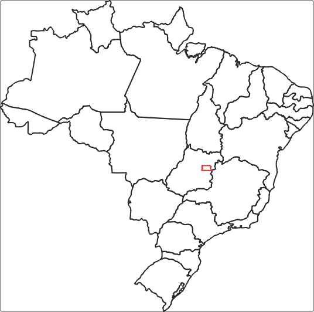
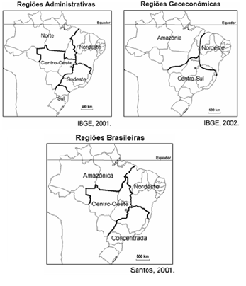

Questão 01
Escreva o nome dos Estados e das capitais do Brasil atuais.

Questão 02
(PUC RIO) – O mapa representa a divisão do território brasileiro em três grandes regiões ou complexos geoeconômicos.

Qual(is) texto(s) abaixo apresenta(m) corretamente características dominantes nesses complexos nas últimas décadas?
I – O Centro-Sul destaca-se como o centro econômico de maior dinamismo, gerando cerca de 80% da renda nacional. Nele estão presentes intensos fluxos de mercadorias, da força de trabalho e de capitais.
II – O Nordeste individualiza-se pela repulsão populacional e pela disseminação da pobreza. A estrutura fundiária altamente concentrada tem dificultado seu desenvolvimento.
III – O Complexo Amazônico destaca-se pelo processo de ocupação recente, ligado aos grandes projetos agropecuários e minerais. A construção de rodovias inter-regionais acelera a integração da nova fronteira ao centro nacional dinâmico representado pela Região Sudeste.
a) se apenas o texto III
b) se apenas o texto II
c) se apenas o texto I
d) se os textos I, II e III
e) se apenas os textos I e II
Questão 03
(UEPG 2007) Com relação ao Centro-Sul, uma das regiões geoeconômicas do Brasil, assinale o que for correto.
01) Representa a região de ocupação mais antiga do país, sendo que durante três séculos foi a região mais rica e povoada do país, tendo a cana-de-açúcar como a principal riqueza do Brasil Colônia.
02) As práticas mais modernas da agropecuária encontram-se nessa região, especialmente no interior de São Paulo, Rio Grande do Sul e Minas Gerais.
03) É a região mais povoada, urbanizada e industrializada do país, representada pelas importantes áreas industrializadas da Grande São Paulo, Grande Rio de Janeiro, Grande Belo Horizonte e Grande Porto Alegre.
04) É a maior das três regiões geoeconômicas em extensão, seguida pelo Nordeste e pela Amazônia.
05) Aí se registram as mais constantes lutas pela posse de terras envolvendo posseiros, indígenas, grileiros, empresas e até o Estado.
a) FVFVV
b) FVVFV
c) FFVFF
d) VFFVF
e) FFVVF
Questão 04
(Fuvest) A divisão do território brasileiro em 3 grandes complexos regionais -Amazônia, Nordeste e Centro-Sul - tem a vantagem de caracterizar
a) a Amazônia, com seus recursos explorados a partir de um planejamento global do Estado.
b) o Nordeste, como um pólo de atração demográfica, em decorrência do turismo.
c) o Centro-Sul, como região socioeconômica de poucos contrastes internos.
d) a homogeneidade econômica no interior de cada complexo, do ponto de vista agropecuário.
e) a especialidade do processo socioeconômico, considerando a gênese histórica de cada complexo.
Questão 05
"O geógrafo Pedro Pinchas Geiger propôs, em 1967, a divisão regional do Brasil em três regiões geoeconômicas ou complexos regionais (...). Essa divisão regional tem por base as características geoeconômicas e a formação histórico-econômica do Brasil. (...)"
(ADAS, M. "Geografia: o Brasil e suas regiões geoeconômicas". São Paulo: Moderna, 1996. p. 52 e 67.)
Aos complexos regionais da Amazônia, do Nordeste e do Centro-Sul, propostos por Geiger, podem-se atribuir, respectivamente, as seguintes caracterizações:
a) Povoado no período colonial - industrializado - de baixa densidade demográfica.
b) De agricultura tecnificada - de atração de mão-de-obra - de predomínio de população rural.
c) De pequenas propriedades rurais - de industrialização tradicional - de economia extrativa.
d) De expansão da fronteira agrícola - colonizado através da economia açucareira – o mais industrializado e urbanizado.
e) De integração dos povos da floresta - de economia agropecuária moderna - de expulsão de mão-de-obra.
Questão 06
Unicamp 2008 - 2a fase Durante o Estado Novo (1937-1945), foi criado o Conselho Nacional de Geografia, que deu origem ao Instituto Brasileiro de Geografia e Estatística, IBGE. Uma das atribuições do IBGE era produzir estatísticas básicas sobre a população brasileira, por meio de Censos. Também caberia ao Instituto produzir informações cartográficas, bem como propor e instituir uma regionalização do território brasileiro. As figuras abaixo dizem respeito a dois momentos históricos da regionalização do território brasileiro. Pergunta-se:

a) Qual o principal critério utilizado para instituir a regionalização do território brasileiro em 1940? Qual a principal finalidade do Estado brasileiro ao regionalizar o seu território?
.............................................................................................................................................................
Questão 07
O Centro-Oeste apresentou-se como extremamente receptivo aos novos fenômenos da urbanização, já que era praticamente virgem, não possuindo infraestrutura de monta, nem outros investimentos fixos vindo do passado. Pôde, assim, receber uma infraestrutura nova, totalmente a serviço de uma economia moderna.
SANTOS, M. A Urbanização Brasileira. São Paulo: EdUSP, 2005 (adaptado).
O texto trata da ocupação de uma parcela do território brasileiro. O processo econômico diretamente associado a essa ocupação foi o avanço da
a) industrialização voltada para o setor de base.
b) economia da borracha no sul da Amazônia.
c) fronteira agropecuária que degradou parte do cerrado.
d)exploração mineral na Chapada dos Guimarães.
e) extrativismo na região pantaneira.
Questão 08
(Unesp 2018) Na década de 1960, Pedro Pinchas Geiger elaborou uma nova regionalização do espaço brasileiro, estabelecendo três grandes regiões – Centro-Sul, Nordeste e Amazônia – segundo critérios relacionados
a) aos limites estaduais e às características morfoclimáticas.
b) à formação socioespacial e aos limites estaduais.
c) às características morfoclimáticas e aos aspectos socioeconômicos.
d aos aspectos socioeconômicos e às heranças do passado.
e) às características naturais e à formação socioespacial.
Questão 09
(FUVEST)

A partir dos mapas,
a) comente os critérios utilizados para o estabelecimento de cada uma das três regionalizações do Brasil.
.............................................................................................................................................................